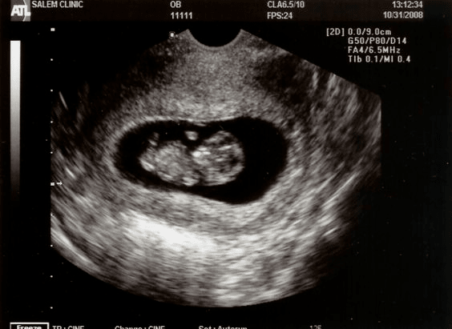

Centro Medico Dra Bechio, es un centro con una joven experiencia en el rubro de diagnóstico. Somos el centro mas completo y con la mas alta tecnologia en todo Capitan Bermudez.
Logramos cubrir las necesidades de distancia y cercanía de todos nuestros pacientes.
Un centro que se especializa en estudios de la más alta complejidad.
Conocemos las necesidades de nuestros pacientes y asumimos la responsabilidad de garantizarles el mejor servicio de salud. Seguimos un camino basado en la seriedad, profesionalización, superación y honestidad para que Centro Medico Dra Bechio sea su referencia en imágenes médicas.
Nos dedicamos diariamente en crear un servicio diferente, con una calidez y una calidad que hace diferente la experiencia de realizarce un estudio. Creemos que lo mas importante es la calidad diagnostica que nos caracteriza, pero tambien que se sienta con la tranquilidad y la comodidad que se merece.